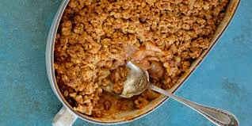

Apple Crumble
Ingredientes
4 manzanas cortadas
1/2 taza manteca derretida
1 taza de harina
1/2 de cucharadita de canela
1 taza de azucar
1/2 taza azucar marron
Procedimientos
Precaliente el horno a 350F
Mezcla la harina, azuca, manteca, y canela.
Enmanteca un plato de hornear, mete las manzanas y cubri con la mezcla de harina y manteca.
Dejar en el horno 25 minutos